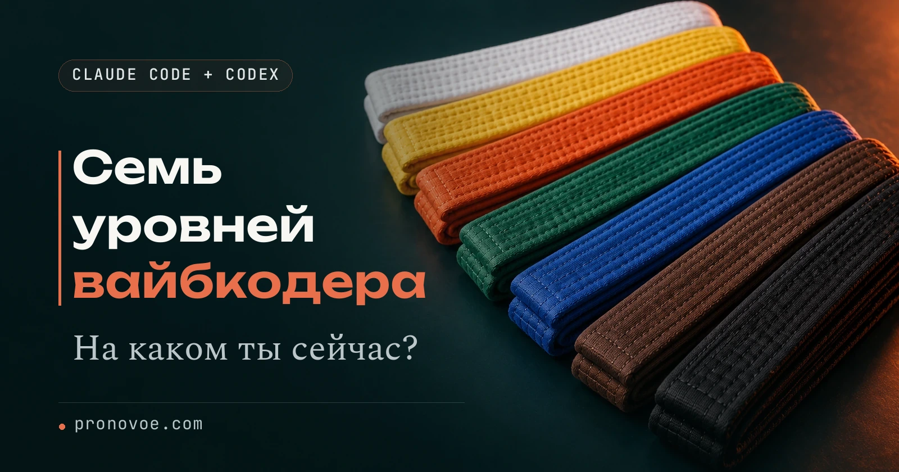

Навигация по уровням

7 уровней вайбкодера: один шаг, чтобы подняться выше
Ты умеешь просить ИИ написать текст или поправить страницу, но каждая новая задача снова требует ручных объяснений. Посмотрим, какой следующий навык снимет повторение: правила проекта, план, сохранённая инструкция или отдельный проверяющий. Ниже семь ступеней работы в Claude Code с действиями, которые можно проверить на своей небольшой задаче.
Выбор следующего навыка
Карта относится к Claude Code, который работает с файлами проекта. Обычный браузерный чат имеет другие возможности. Установка и первый вход описаны отдельно; здесь начни с одной папки и маленькой задачи. Не нужно настраивать все семь ступеней одновременно.
| Ступень | Что проверять |
|---|---|
| 1. Первая задача | Агент открыл нужную папку и объяснил результат |
| 2. Правила проекта | Инструкция хранится в файле и читается в новой сессии |
| 3. План и проверка | До правки понятен порядок действий и критерий приёмки |
| 4. Повторяемая инструкция | Одинаковая работа вызывается сохранённым навыком |
| 5. Внешние инструменты | Подключён конкретный сервис с понятными правами |
| 6. Автоматическая проверка | Настроенное событие действительно запускает проверку |
| 7. Разделение ролей | Исполнитель и проверяющий передают конкретные файлы |
Квадратные скобки в запросах содержат учебные значения: замени их своими до отправки. Если пока хватает одного агента и одной команды, остановись на этом. Следующую ступень выбирай по повторяющейся трудности, а не по номеру.
1. Работа в папке проекта
Если код приходится переносить из чата вручную, открой папку в среде, где агент умеет читать и менять файлы. Сначала дай безопасную задачу на чтение:
Вставь в чат помощника
Прочитай текущую папку проекта. Ничего не меняй. Объясни, какие основные файлы здесь есть, как проверить результат работы и каких сведений тебе не хватает для следующего шага.
Сверь названные файлы с деревом папки. Ответ должен относиться к твоему проекту. Если агент не видит нужный каталог, сначала исправь выбор папки.
Выбор среды и первая небольшая реализация
Признак третьего уровня: план есть, но перенос кода из чата в файлы отнимает время и приводит к ошибкам
Шаг: выбери среду, где агент работает с файлами проекта. В карусели это «Вайбкодер в терминале»: главный навык здесь - работа с кодом проекта, а сам интерфейс может быть графическим. Claude Code, Codex и Cursor - примеры таких инструментов. Для начала хватит одного
Если не пользуешься редактором кода, можно начать с приложения Claude Desktop: скачай его с официального сайта, войди в аккаунт, открой вкладку Code, выбери Local и папку проекта через Select folder. Для этого пути не нужно отдельно устанавливать VS Code или работать в терминале. Нужна подписка Claude Pro, Max, Team или Enterprise. Пошаговая инструкция Anthropic
Если уже работаешь в VS Code, можно установить расширение Claude Code туда. Оно поддерживает вход с указанными платными планами Claude или через Claude Console с отдельной оплатой использования API. Инструкция для VS Code. Для первого прототипа в браузерном конструкторе переход в другую среду вообще не обязателен
Открой папку своего проекта и передай агенту согласованные ТЗ и план. Дай одну небольшую задачу: реализовать первый этап, показать изменения и выполнить предусмотренную проверку. Если проект пока живёт в другом сервисе, сначала выясни, как получить его файлы и запустить их; не переноси его вслепую
Куда смотреть: статья «Собери свой сайт, а не очередного близнеца» показывает отдельный маршрут через VS Code. Когда работа с файлами освоена, статья «Как найти, подключить и вызвать 6 скиллов» объясняет, как использовать готовые инструкции для повторяющихся задач
2. Правила проекта в файле
Когда одни ограничения приходится повторять, сохрани их в CLAUDE.md проекта. Это инструкция для Claude Code, не память браузерного Claude. Перед записью прочитай существующий файл: не заменяй полезные правила пустым шаблоном.
Вставь в чат помощника
Прочитай существующий CLAUDE.md, если он есть. Предложи, что добавить: назначение проекта, важные каталоги, команду проверки результата и запрет публикации без моего решения. Не выдумывай команды и не перезаписывай файл. Сначала покажи предлагаемый текст.
После сохранения открой новую сессию в той же папке и попроси назвать правила и путь к файлу. Наличие файла не означает, что агент обязательно выполнит каждую строку; важные действия всё равно проверяй.
3. План, маленькая правка и проверка
Если агент берётся сразу переделывать проект, сначала остановись на постановке задачи. В режиме планирования Claude Code исследует материалы и предлагает действия до реализации. Выбранный режим проверь по индикатору интерфейса; сочетания клавиш могут зависеть от версии.
Уточнение результата
Признак первого уровня: пишешь «сделай мне сайт», а потом долго уточняешь, что вообще должно было получиться
Шаг: перед новым проектом или существенной функцией согласуй с Клодом техзадание. Для маленькой правки достаточно описать желаемое изменение и проверку результата
Фраза для Клода (копировать):
Я хочу сделать [страницу услуг с формой записи]. Пока не пиши код. Задавай мне вопросы по одному: для кого это, какую задачу решает проект, что человек делает первым, что должно быть на экране и что не входит в первую версию. Когда данных будет достаточно, собери техзадание и добавь проверяемые признаки готового результата. Покажи его мне для согласования
Прочитай ТЗ и поправь то, что не соответствует твоей задумке. Затем попроси план из следующего раздела. Можно продолжить в том же чате. Если переходишь в другой инструмент или новый чат, передай туда согласованные ТЗ и план
План устройства проекта
Признак второго уровня: желаемый результат описан, но ещё непонятно, как части проекта будут работать вместе
Шаг: до большой реализации попроси объяснить устройство проекта, данные, возможные сбои и порядок работы. У простой страницы может не быть базы данных и входа. У приложения с аккаунтами и оплатой эти решения нужно принять заранее
Фраза для Клода (копировать):
Вот согласованное техзадание: [страница услуг, форма записи, проверка отправки заявки]. Прежде чем писать код, предложи простой план: 1) какие части нужны и как они связаны; 2) нужны ли хранение данных, вход и внешние сервисы; если нужны, где будут данные и почему; 3) что может пойти не так и как это заметить; 4) в каком порядке строить и как проверить каждый шаг. Не добавляй сложность без необходимости. Не угадывай недостающие условия, спроси меня. Пока без кода
Проверь, что план отвечает ТЗ и каждый этап можно проверить. После согласования попроси реализовать первый небольшой этап, а не весь проект сразу
Разбор ошибки до исправления
Признак четвёртого уровня: агент уже меняет файлы, но при ошибке хочется попросить «переделай всё заново»
Шаг: опиши, какое действие вызвало ошибку и что ожидалось. Попроси изучить причину до правки. Если агент не видит проект, одного текста ошибки может не хватить
Фраза для Клода (копировать):
Вот что я пытался сделать: [проверить отправку формы записи]. Вот что произошло и текст ошибки: [страница услуг, форма записи, проверка отправки заявки]. Пока не меняй код. Изучи доступные файлы и объясни простыми словами, что известно о причине, а что пока только предположение. Если данных не хватает, скажи, что нужно показать или как повторить ошибку. Предложи минимальное исправление и проверку, которая покажет, что ошибка устранена и прежнее поведение сохранилось
Когда причина понятна, попроси внести минимальную правку и повторить проверку. Отладка закончена, когда ошибка больше не воспроизводится и нужные действия работают
4. Сохранённый навык для повторной работы
Когда порядок проверки уже пригодился несколько раз, сохрани его как навык. В Claude Code используется файл SKILL.md в отдельной папке навыка. Старые команды .claude/commands тоже встречаются в проектах; новый путь и формат смотри в официальной документации.
Вставь в чат помощника
Предложи навык check-text для проверки текста в этом проекте. Файл: .claude/skills/check-text/SKILL.md. Название: check-text. Описание: проверяет текст по материалам и правилам проекта. Внутри задай порядок: прочитать исходники, найти неподтверждённые факты и повторы, перечислить точные замечания с цитатами. Ничего не исправлять и не публиковать автоматически. Сначала покажи полный текст файла для проверки.
После создания проверь, появился ли навык в текущем интерфейсе, и вызови /check-text на одном тексте. Если вызов недоступен, сверь имя, путь и версию. Файл навыка сам не создаёт ежедневное расписание.
Выбор повторяющейся задачи
Признак седьмого уровня: разделение ролей и передача результатов уже настроены, а ты принимаешь решения о цели, качестве и расходах
Шаг: выбери одну повторяющуюся задачу и настрой понятный цикл: входные данные, исполнитель, проверяющий и условия приёмки. Проверь его на одном реальном примере, прежде чем отдавать регулярную работу
Фраза для Клода (копировать):
Вот что на этой неделе приходилось делать руками: [проверка текста и формы записи на странице услуг]. Выбери одну повторяющуюся задачу, которую имеет смысл делегировать. Предложи, кто делает, кто проверяет, какие нужны данные и доступы и по каким признакам я принимаю результат. Скажи, что потребует отдельной настройки или моего участия. Сначала предложи план, ничего пока не запускай
5. Доступ к внешнему инструменту
Если задаче нужен браузер, репозиторий или другой сервис, сначала узнай, какие подключения уже доступны. MCP - способ дать агенту инструмент; сам по себе он не открывает все твои аккаунты.
Вставь в чат помощника
Для этой задачи нужен доступ к [репозиторию проекта]. Проверь уже доступные инструменты. Если подключения нет, покажи официальный способ настройки, необходимые права и действие для проверки чтения. Ничего не подключай и не меняй разрешения до моего решения. Ключи и токены в чат не выводи.
Для Claude Code состояние подключений можно посмотреть командой claude mcp list в терминале. Название в списке ещё не доказывает доступ к нужному материалу: попроси прочитать один известный объект. Не выдавай права записи, если достаточно чтения. Старый пример GitHub-сервера из чужой статьи перед установкой сверь с действующей официальной инструкцией.
6. Проверка по событию
Если правило должно срабатывать автоматически, нужна настройка события и обработчика. В Claude Code для этого существуют hooks, например PreToolUse перед инструментальным действием. Один пустой settings.json не включает ни одной проверки.
Выбери одно ограничение, которое можно однозначно проверить. Например, перед изменением файлов запускается проверка разрешённого каталога. Попроси агента показать событие, сам обработчик и поведение при ошибке по официальной документации. Настройку сначала проверяют на копии проекта.
Вставь в чат помощника
Предложи одну автоматическую проверку перед изменением файла. Сначала опиши событие, условие, обработчик и ожидаемый результат для разрешённого и запрещённого пути. Покажи, как отключить эту настройку. Не меняй существующие разрешения и не запускай проверку на рабочих файлах. Если текущая среда не поддерживает hooks, скажи это прямо.
В другой среде такой механизм может отсутствовать или настраиваться иначе. Правила из CLAUDE.md полезны, но не равны машинной блокировке.
7. Исполнитель, проверяющий и выпуск
Когда задача действительно делится на части, дай исполнителю конкретный результат, а проверяющему - исходники и критерии. Для файлов роли в Claude Code используется .claude/agents; первый сотрудник и готовые инструкции разобраны отдельно.
Разделение одной задачи
Признак шестого уровня: ты умеешь запускать проект, но сам ведёшь исполнение и каждую проверку
Шаг: попробуй разделить одну подходящую задачу между исполнителем и отдельным проверяющим. Небольшую правку часто быстрее сделать с одним агентом. Несколько агентов полезны, когда части работы можно разделить или нужна независимая проверка
Покупать второй инструмент для этого необязательно: в Claude Code есть субагенты, отдельные помощники с собственным контекстом. Другой вариант - связка Claude Code и Codex. Роли можно выбрать под задачу
Два установленных приложения или расширения сами по себе не соединены. Нужен настроенный способ передачи задания и результата; если его нет, ты переносишь их вручную. Исполнители не должны одновременно менять одни файлы. Проверяющий открывает результат и проверяет его по ТЗ
Фраза для Клода (копировать):
Вот задача: [проверить отправку формы записи]. Предложи, какую отдельную часть можно поручить другому агенту, а какую оставить ведущему. Для каждой части укажи результат и способ проверки. Сначала объясни, как в нашей среде передаются задание и результат: автоматически или мне нужно перенести их вручную. Не назначай двум исполнителям одновременную правку одних файлов. Проверяющий должен открыть результат и провести проверки, а не принять отчёт на слово
Начни с одной части работы и одного проверяющего. Схема пригодилась, если результат получен и проверен без постоянного ручного управления каждым шагом
Приёмка и публикация результата
Признак пятого уровня: проект проходит локальные проверки, но будущие пользователи ещё не могут им пользоваться
Шаг: подготовь и опубликуй рабочую версию. Выпуск - это не только ссылка: нужны функции из ТЗ и проверка их работы после запуска. База данных, вход, оплата и собственный домен нужны тем проектам, где они предусмотрены. Для простой страницы достаточно подходящего хостинга
Агенту понадобятся доступ к способу публикации и, возможно, твои действия в аккаунте сервиса. Сначала выясни условия, стоимость и ограничения, затем согласуй запуск
Фраза для Клода (копировать):
Помоги подготовить этот проект к публикации. Сначала изучи его и предложи подходящий способ: что нужно разместить, какие доступы потребуются, есть ли бесплатный вариант и его ограничения, что стоит денег. Не добавляй базу данных, вход, оплату или платный домен, если они не нужны по ТЗ. Пока не публикуй и ничего не покупай. После согласования проведи меня по шагам, а после запуска открой ссылку и проверь основные действия из ТЗ
Куда смотреть: статья «Собери свой сайт, а не очередного близнеца», блок «Как посмотреть и выложить»
Выбор одного следующего действия
Посмотри, где повторяется ручная работа: теряются правила, меняются требования, нужно переносить ответы или каждый раз проверять одно и то же. Выбери один навык из карты и проверь его на небольшой задаче.
Вставь в чат помощника
Я работаю с проектом [страница с услугами]. Сейчас повторяется проблема [каждый раз заново объясняю правила оформления]. Назови один следующий навык из карты: работа с папкой, файл правил, план, навык, подключение, проверка по событию или разделение ролей. Объясни одно действие и результат, по которому я пойму, помогло ли оно. Пока ничего не меняй.
Что ломается и что делать
| Ситуация | Действие |
|---|---|
| Правила не применились | Проверь папку, файл и конкретный ответ. Уточни нарушенную строку. |
| Навык не находится | Сверь имя и путь SKILL.md с версией Claude Code. |
| MCP есть в списке, но не читает материал | Проверь авторизацию и доступ к выбранному объекту. |
| Автоматическое правило не сработало | Проверь событие и обработчик; пустой файл настроек проверок не создаёт. |
| Два агента правят одно и то же | Раздели файлы или выполняй изменения последовательно. Приёмку проводи по последней версии. |
Памятка для следующей задачи
- Папка и среда названы до действий.
- Требования и критерий готовности сохранены.
- Повторяемая работа вынесена в навык после проверки вручную.
- Доступы ограничены нужной задачей.
- Автоматические проверки действительно запущены на безопасном примере.
- Результат открыт проверяющим, публикация согласуется отдельно.
Частые вопросы
Нужно ли осваивать все семь ступеней по порядку?
Нет. Карта помогает выбрать навык по задаче. Для одной небольшой правки несколько агентов и hooks могут быть лишними.
CLAUDE.md сохраняет весь разговор?
Нет. Это файл инструкций. Точные решения и материалы сохраняй отдельно; история сессии и память приложения - другие механизмы.
Почему нет команды /agents из старой инструкции?
В некоторых версиях мастер убран. Роли можно создать файлами с обязательной шапкой по текущей документации. Не считай старую слэш-команду универсальной.
Навык и автоматическая проверка - одно и то же?
Нет. Навык содержит порядок работы; автоматическая проверка привязана к событию. Наличие инструкции само не доказывает автоматического запуска.
Теперь выбран конкретный навык: сохранить правила, повторить удачную инструкцию или разделить задачу с проверяющим. Но связать эти действия с регулярным контентом, сайтом и выпуском продукта ещё предстоит. Ниже - о том, как организовать такую работу нейросетями без знания кода.
Что можно делать с нейросетями, если не знаешь кода?
Чтобы почувствовать размах, посмотри Концентрат Ивана Сергеева. ИИ-агенты на твоих глазах собирают продукт, контент, сайты и воронки без кода. Это основа под любую цель: свои услуги, партнёрка, чужой бизнес. Три дня бесплатно, VIP с четвёртым днём - 990 ₽
Забрать КонцентратУже знаешь, чего хочешь? Тогда в мастер-группу Ивана: система продаж на ИИ без продюсера и технаря, сопровождение и сообщество
Заполнить анкету предзаписиНабор открывается редко, кто записался заранее, получает лучшую цену и бонусы. Платить сейчас не нужно
Реклама. ИП Сергеев И. С., ИНН 352511695540. erid: 2Vtzqvk2p6q